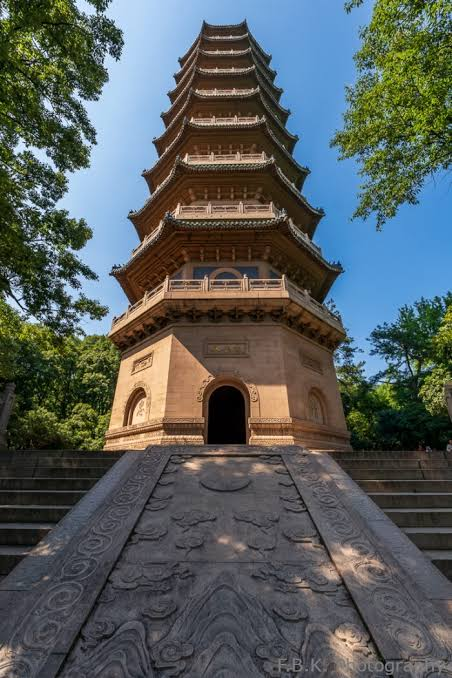

Practice
Training the mind
Chanting, meditation, study, and observance gave Buddhist teachings a repeated form that could be learned by a community.
Daily life · Monastic community
A temple was not only a sacred building. It was a schedule of study, ritual, work, meals, travel, and relationships. This is a historically informed reconstruction, not the diary of one named monk.
How to read this page
Rules and biographies tell us that monks lived through discipline, teaching, alms, ritual, and community work. The exact timetable differed by monastery and period, but the pattern helps explain how Buddhism became part of daily life in Jiankang.
Use the map beside this page to imagine the spaces that supported the routine: a hall for chanting, a refectory, a library, a workshop, a gate, a road, and a mountain path.


From dawn to night
The important point is not an exact clock. It is the connection between personal practice and institutional work.
The day began with bodily discipline and preparation for communal practice. A monk’s first responsibility was often to enter the shared rhythm of the monastery rather than follow a private spiritual schedule.
Ritual recitation and instruction connected the monastery to texts and to a lineage of teachers. In a large Jiankang monastery, this was also when visitors, students, and patrons could encounter Buddhist learning.
Meals were communal and regulated. Food depended on the monastery’s land, donors, kitchen workers, and local networks; the rule of eating therefore reveals an economic community, not only an individual vow.
Copying, cleaning, gardening, receiving guests, caring for images, organizing ceremonies, and teaching novices all required time. A temple became durable because ordinary tasks were repeated by many people.
Monks could meet lay donors, officials, travelling teachers, and other communities. Roads between the city and mountain temples allowed ideas, images, texts, and reputations to circulate.
The day closed through communal practice and preparation for the next day. The monastery’s continuity came from this repetition: individual effort was folded into an institution that outlasted any one monk.
What the routine reveals
The life of a monk joined religious practice to organization.
Practice
Chanting, meditation, study, and observance gave Buddhist teachings a repeated form that could be learned by a community.
Service
Teaching, receiving visitors, performing rites, and responding to requests connected monastic life with lay society.
Maintenance
Food, repairs, gardens, images, books, and records made religious life physically possible.
Evidence note: This page combines the general structure of Buddhist monastic discipline with evidence from Jiankang temple histories and biographies. It does not claim that every monastery followed one identical timetable. Start with the Qixia inscription archive and the historical profiles in People of Nanjing Buddhism.